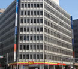

';
$header_obj->fncMenuHead_h1text = '日本ワーキング・ホリデー協会名古屋オフィスへのアクセス';
$header_obj->add_js_files = "
";
$header_obj->add_css_files = "";
$header_obj->display_header();
include('../../calendar_module/mod_event_horizontal.php');
?>
';
$header_obj->fncMenuHead_h1text = '日本ワーキング・ホリデー協会名古屋オフィスへのアクセス';
$header_obj->add_js_files = "
";
$header_obj->add_css_files = "";
$header_obj->display_header();
include('../../calendar_module/mod_event_horizontal.php');
?>
アクセス

名古屋オフィス
| 住所 |
|---|
|
名古屋セミナー会場：名古屋オフィスにて開催されます。

〒450-0002 名古屋市中村区名駅2-45-19 桑山ビル８階Ａ号室
名古屋セミナー会場：名古屋オフィスにて開催されます。
〒450-0002 名古屋市中村区名駅2-45-19 桑山ビル８階Ａ号室 |
| 最寄り駅 |
|
○ JR名古屋駅から徒歩５分 桜通口から名駅通りを名古屋ルーセントタワー方向に進んでください。 地下通路をご利用の場合は、１番または１０番出口がおすすめです。 旧名古屋中央郵便局（現在は名駅一丁目計画（仮称）により再開発中）の向かい側です。 より詳細なアクセス方法はこちらから 
【名古屋駅からの地下通路】 名古屋オフィスのビルは、地下通路でお越しいただくことも可能です。 １番出口「松岡ビル」を目指してきてください。 より詳細なアクセス方法はこちらから。 |
| 連絡先 |
|
|
| 営業時間 |
| OPEN 11:00 - CLOSE 19:00 名古屋オフィスは、土日、祝日も営業しております。 ※ご注意 個別でのカウンセリングをご希望の場合は、事前にご予約をお願い致します。 |
| カウンセラー紹介 |
|
新宿本店では、毎日様々な初心者向けワーキングホリデー（ワーホリ）セミナーを開催しております。 新宿本店は、東京にお住まいのお客様はもちろん、千葉県、埼玉県、横浜、栃木県、群馬県にお住まいのお客様にも気軽に参加 していただけるよう時間帯や日程を考慮し、回数を増やして開催しております。 |
| カウンセラー紹介 |
|
|
| オフィスの様子 |


|
| 名古屋オフィスの雰囲気 |
|
オフィスは青いカーペットが敷き詰められ、ゆったりとした店内です。 
|